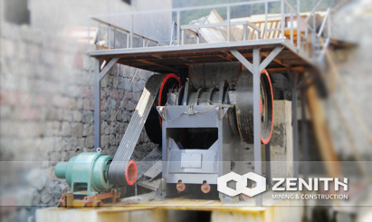
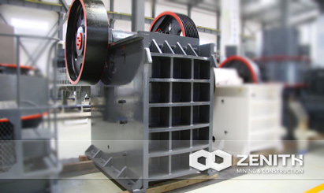

- 
- 

PE Jaw Crusher
Jaw crusher belongs to a common crushing machine in the process of mining. Based on years' experience and technology development, Zenith PE jaw crusher series are of 6 different models, which can meet most crushing requirements in primary and secondary crushing. Flexible discharge opening setting of jaw crusher allows perfect match with relative equipments. As per Feedback, our experts will make continuous improvements on our products to meet customers' changing needs.
PE Jaw Crusher Application
PE jaw crusher is widely used in fields of mining, metallurgy, construction, smelting and chemical industries etc. As for the processing materials, it can be used to deal with all kinds of stones, such as the granite, limestone, basalt quartz, river stone, and sand gravel, etc. As for ore materials, it can deal with gold ore, iron ore, copper ore, manganese ore, bauxite and coal, etc. Of course, PE series jaw crushers are also applicable for recycling construction waste, slags, and crushing debris as well as glass.
PE Jaw Crusher Main features and advantages
- The application of world-class manufacturing processes and high-tech material;
- Integrated steel structures are used for the base of bearing;
- The crushing chamber uses "V"-shaped structure, so that the feeding size equal to the nominal one;
- The crushing chamber is deep and without dead zone, increases the capacity and the output;
- Lubrication system is safe and reliable, convenient to replace parts, easy to maintain;
- The outlet employs shim adjustment system, convenient and reliable, and increase the flexibility of the equipment;
- Low noise, less dust;
The tacnology data
| Model | Feed Opening (mm) | Max Feeding (mm) | Discharge Opening (mm) | Capacity (t/h) | REV (r/min) | Power (kw) | Motor Model | Machine Size (mm) |
|---|---|---|---|---|---|---|---|---|
| PE200×350 | 200×350 | 170 | 20-50 | 2-6 | 220 | 6-7.5 | Y160M-6/7.5 | |
| PE250×400 | 250×400 | 210 | 20-60 | 5-20 | 310 | 6-15 | Y180L-6/15 | 1450×1315×1296 |
| PE250×750 | 250×750 | 210 | 20-60 | 8-22 | 320 | 6-30 | Y225M-6/30 | |
| PE500×750 | 500×750 | 425 | 50-100 | 45-100 | 275 | 6-55 | Y280M-6/55 | 1890×1916×1870 |
| PE600×900 | 600×900 | 500 | 65-160 | 70-120 | 250 | 6-75 | Y315S-6/75 | 2520×1840×2303 |
| PE750×1060 | 750×1060 | 630 | 80-140 | 130-260 | 250 | 8-90 | Y315L1-8/90 | 2620×2302×3110 |
| PE900×1200 | 900×1200 | 750 | 95-165 | 220-380 | 200 | 8-130 | JR127-8/130 | 3789×2826×3025 |
| PE1000×1200 | 1000×1200 | 850 | 195-265 | 230-380 | 200 | 8-130 | JR127-8/130 | 3889×2826×3025 |
| PE1200×1500 | 1200×1500 | 1020 | 150-300 | 400-800 | 220 | 8-200 | YR355M4-8/200 | 4930×3150×3700 |